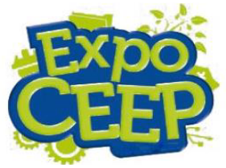

EXPOCEEP 2021
A EXPOCEEP/SEMINÁRIO constitui-se na exposição dos trabalhos resultantes de “Práticas Pedagógicas”, como “Trabalhos de Pesquisa Escolar”, realizados por alunos e professores, no decorrer do ano letivo envolvendo todos os cursos ofertados na instituição que será apresentado em forma de SEMINÁRIO.
INSCRIÇÕES
As inscrições serão realizadas pelos alunos e professores orientadores, por meio de formulário on-line com link disponível PELO COORDENADOR DE CURSO no período 05 a 31 de outubro de 2021 e a lista das inscrições aprovadas para participação na EXPOCEEP/SEMINÁRIO será divulgada no dia 05 de novembro de 2021. O formulário de inscrição será repassado aos coordenadores de curso, os quais procederão à análise de viabilidade do trabalho junto ao professor orientador, deferindo ou indeferindo o mesmo. Deverá ser postado junto com o projeto o formulário preenchido e digitalizado de uso da imagem. O projeto deve ser obrigatoriamente anexado em PDF. As inscrições serão realizadas em modalidade única: Trabalho resultante de pesquisa escolar.
Trabalho Resultante de Pesquisa Escolar
Para essa modalidade não há limite para o número de alunos e professores orientadores envolvidos no trabalho, a pesquisa escolar caracteriza-se por destacar a capacidade dos alunos em apropriar-se e compartilhar o conhecimento sistematizado da área do seu curso, divulgando e realizando ações e experimentos já consagrados. O trabalho deverá ser apresentado na forma escrita, conforme o projeto da inscrição, slides e na forma oral durante a EXPOCEEP/SEMINÁRIO.
Da Apresentação dos Trabalhos
A apresentação dos trabalhos acontecerá sob responsabilidade dos professores orientadores e alunos inscritos em cada projeto. Os trabalhos serão apresentados no auditório. Os arquivos das apresentações (slides e/ou vídeos) devem ser entregues ao coordenador de curso até dia 07 de novembro, o coordenador repassará para a pessoa responsável das apresentações no dia 09 de novembro. Os alunos que apresentarão seus trabalhos deverão estar no local com 30 minutos de antecedência, para organizá-los. Os trabalhos serão apresentados na versão oral e na forma escrita em slides. Os alunos poderão usar vídeo com tempo de no máximo 5min. Os alunos terão no mínimo 5 minutos e no máximo 10 minutos para a apresentação completa do projeto. Após a apresentação da equipe, cada avaliador pode fazer até três perguntas. Os trabalhos escritos poderão resultar em revista (ou anais), portfólio, Memorial do PPP ou postagem no site do CEEP e nas mídias sociais.
Credenciamento
O credenciamento, através de crachás dos alunos e professores que apresentarão os trabalhos e dos avaliadores, será efetuado pela equipe pedagógica, conforme listagem de inscrições aprovadas.
Competencia dos Coordenadores e Pedagogos
Caberá aos coordenadores e pedagogos dos cursos analisar os projetos do seu curso e a temática, deferir ou indeferir os mesmos e em caso de negativa do projeto, realizar justificativa, orientar os professores conferir a expedição do certificado com carga horária de 24h ao professor e aos alunos, quando solicitado, no prazo máximo de 30 dias após o evento. O certificado será gerado em PDF e enviado no e-mail.
Compete aos Professores orientadores e/ou Coorientadores dos Projetos
Compete aos professores orientadores e/ou coorientadores dos projetos incentivar a participação do corpo discente no evento científico, ter ciência do regulamento da EXPOCEEP/SEMINÁRIO, zelar pelo bem-estar de seus alunos, orientando-os quanto aos direitos e deveres, inscrever os trabalhos, orientar e esclarecer aos alunos em relação aos casos de plágio e suas implicações legais, realizar orientação aos alunos durante a pesquisa, zelar para que os alunos mantenham o local de apresentação seminário. Orientar, supervisionar todas as tarefas e o cumprimento dos horários estabelecidos pelo Comitê Organizador, acompanhar, orientar e assessorar os alunos em todas as atividades durante a EXPOCEEP/SEMINÁRIO. Ficará a critério do professor avaliar, com registro de notas em sua disciplina, os trabalhos apresentados pelos alunos que estão sob sua orientação. Solicitar a comissão organizadora seu certificado em até 30 dias após o evento.
Competencia dos Alunos e Responsáveis pelos Projetos
Compete aos alunos responsáveis pelos projetos preencher o projeto de inscrição e entregar ao seu professor orientador para análise e posterior postagem no site, realizar a pesquisa conforme orientação do professor, empenhar-se na organização do material audiovisual com a devida antecedência, caso o trabalho exija, respeitar o cronograma determinado pelo professor orientador e pela comissão do evento para as apresentações, organizar o material de apresentação para o evento, apresentar à comunidade interna e externa seu trabalho, atender as exigências do projeto de inscrição, quanto aos itens obrigatórios na apresentação, conforme modalidade de inscrição, confeccionar os slides de apresentação do trabalho, conforme modelo fornecido pela Instituição; os demais materiais serão de livre escolha, comparecer uniformizado, fazendo uso do crachá do evento para a identificação pessoal e do título do projeto, respeitar as normas de distanciamento na EXPOCEEP/SEMINÁRIO e solicitar o certificado até o dia 10 de dezembro.
O avaliador
O(A) Professor(a) que tem trabalhos na modalidade, ficará vedado avaliar a mesma. O(A) avaliador(a) será indicado e terá como finalidade avaliar os projetos expostos na EXPOCEEP/SEMINÁRIO para a premiação, será permitido profissional da área do curso, que não atua no CEEP avaliar os projetos. A avaliação dos trabalhos selecionados será realizada de forma presencial durante a EXPOCEEP/SEMINÁRIO. Este processo definirá as premiações dos aluno(s) e seu(s) orientador(es) e/ou coorientador(es).
Critérios de Avaliação
Os critérios de avaliação e das especificidades dos trabalhos serão avaliados por três membros da comissão avaliadora. Critérios de produção escrita, projeto de inscrição, com valor máximo de 2,0 pontos. Apresentação oral e domínio do conteúdo abordado, com valor máximo de 5,0 pontos. Apresentação de slides, com valor máximo de 2,0 pontos. Geral da apresentação, postura e incluindo outros materiais áudio-visual (vídeos, fotografias, maquetes, experimentos, entre outros), com valor máximo de 1,0 ponto, perfazendo um total máximo de 10,0 pontos.
Durante a apresentação dos trabalhos
Durante a apresentação dos trabalhos serão avaliado os slides (capacidade de síntese e clareza), a apresentação oral dos alunos e o desempenho durante a entrevista realizada pelos avaliadores (perguntas realizadas aos alunos), os avaliadores analisarão também os materiais complementares (opcionais), expostos pelos alunos tais como: vídeos, fotografias, modelos, maquetes, experimentos, entre outros. A apresentação de materiais complementares seguirá as normas éticas, de segurança e respeitará o espaço destinado a cada equipe.
Composição de Nota 3º Trimestre(Integrado) ou 2º Bimestre (Subsequente)
Os projetos desenvolvidos poderão compor a nota do 3o trimestre (no Integrado) ou 2o bimestre (no Subsequente) em duas situações:
- o professor orientador e coorientador poderão atribuir a nota aos trabalhos conforme acordar com seus alunos;
- aluno poderá escolher apenas uma disciplina para compor a nota extra na nota da prova regimental avaliativa do 3o trimestre (integrado) ou 2o bimestre (subsequente);
Das Premiações
Primeiramente serão premiados com medalhas o 1o, 2o e 3o lugares, estudante(s), orientador (es) e/ou coorientador(es), dos trabalhos, sendo entregue certificados aos participantes (aluno, orientador e/ou coorientador e demais), que elaboraram e apresentaram o projeto. O certificado será disponibilizado em até trinta dias após solicitação e entregue ao(s) professor(es) e ao(s) aluno(s), mediante solicitação à coordenação de curso.
Regulamento
- ExpoCeep 2021: Regulamento